LEARN
ECOLOGY
サメの生態について
-
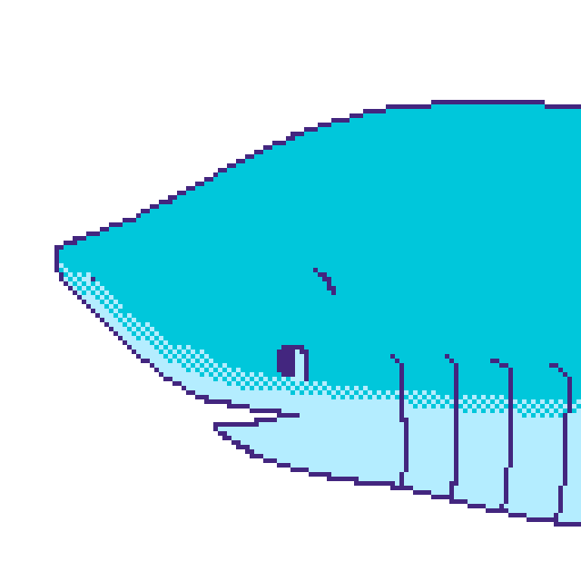
サメとは？
#骨は全身軟骨！
#ほっぺたにエラがある
#500種以上の仲間たち
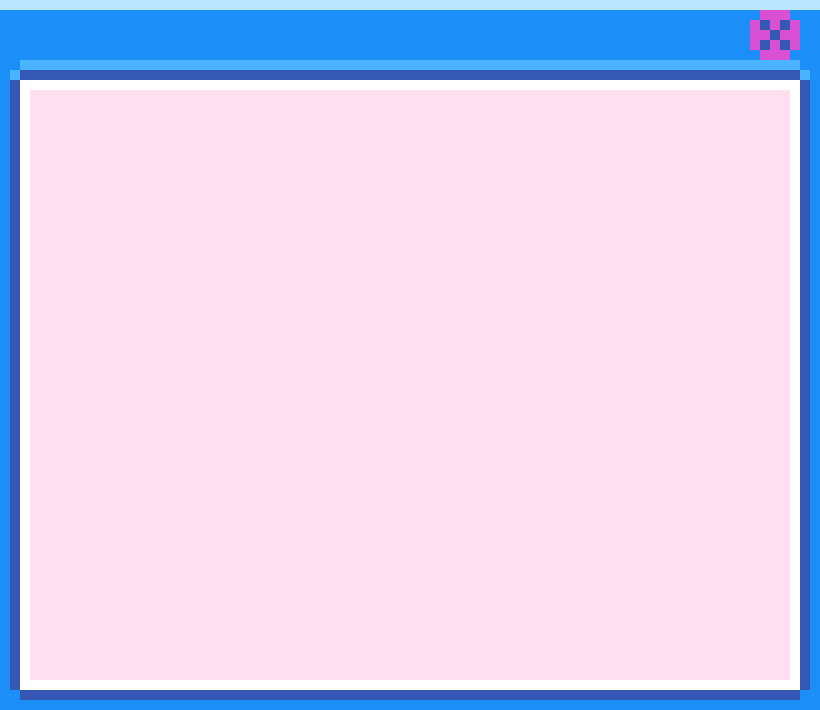サメとは？
「サメ」と聞いて、何を思い浮かべますか？サメは人を襲うというイメージがありますが、
実際は人を襲うことは滅多にありません。このページではサメについてもっと知ることが出来ます。サメは軟骨魚類、という種類の魚の仲間です。軟骨魚類とは、体全身の骨が軟骨でできている
魚の種類のことです。よく似た仲間にエイもいますが、見分け方はほっぺたにエラがある方がサメ、お腹側にエラがあるのがエイです。水族館で見分けてみて下さい。
サメの仲間はなんと500種類以上！サメによって姿も生態も全く違います。
お気に入りのサメを探してみましょう！ -
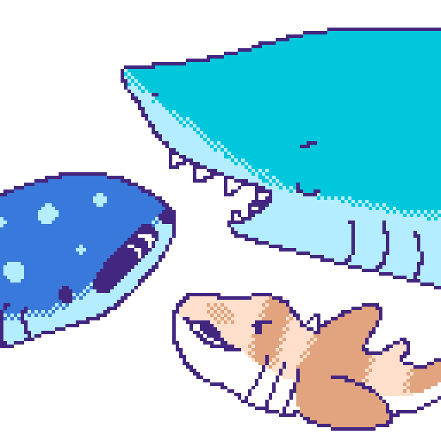
サメの歯・肌
#エサによって歯の形が違う
#エスカレーター式の歯
#サメ肌
#体にも歯？
サメの歯
サメには鋸歯と呼ばれる鋭い歯があり、獲物を捕らえたり、切り裂くために最適化されています。
歯は絶えず生え変わり、効果的な狩猟を可能にします。また、サメの歯は生え替わることも大きな特徴で、エスカレーター式に新しい歯が奥から成長してきます。
そのため、サメは一生涯にわたって獲物を捕食することが出来るのです。サメの歯は種類、食べる餌によって形が異なり、例えば オキアミを吸い込んで食べるジンベエザメは米粒のように小さな歯で、歯は使いません。 一方で貝類や甲殻類を歯で割って食べるネコザメの歯は平らになっています。一方、サメの肌はまるで歯のような小さな尖った鱗で覆われ、摩擦抵抗が少ないため、水中での 滑らかな移動をサポートします。この特殊な鱗は抗菌作用もあり、傷ついても病気などの感染を 予防します。触ってみるとザラザラとしていて、うろこの名前は「楯鱗」(じゅんりん)といいます。
-
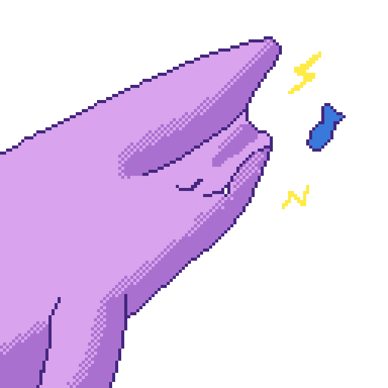
エサの食べ方
#サメは電気を感じるらしい
#アゴが飛び出す！？
#サメにも好き嫌いがある
エサの食べ方
サメのエサの食べ方には様々な仕組みがあります。頭がハンマーのような形が特徴のシュモクザメ類は、 見えないエサを探し出すことができるといいます。「ロレンチーニびん」という器官を持っていて、生物の持つ 弱い電気を感じ取ることができ、砂の中の獲物を探し当てて捕食することができるそうです。
また、多くのサメは口が下向きについているため、上顎を前に突き出すようにして獲物を捕らえます。
ジンベエザメなどの大きなサメはプランクトンなどの小さなエサを食べますが、その方法は周りの海水ごと 吸い込み、「鰓板」(さいばん)とよばれる、プランクトンをこしとることの出来る器官を使って海水からエサだけを こしとって食べることができます。残った海水はエラから出ていくようになっています。
-
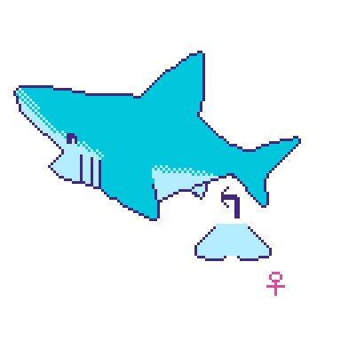
サメの性・交尾
#オスメスの見分け方はおなか
#サメは交尾で子供をつくる
#だから漢字で鮫と書くらしい
サメの性・交尾
サメのオス・メスは簡単に見分けられるようになっています。 オスにはしりびれの付け根にクラスパー(交接器)という、人間でいうおちんちんが2つついています。 逆にメスにはついていません。エイも同じ方法でオスとメスが見分けられます。
サメはなんと、人間と同じように、交尾で子どもを作ります。 そのため、漢字でも、「交」尾をする「魚」と書いて、「鮫」と書きます。
-
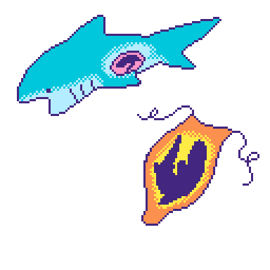
卵・赤ちゃん
#サメの卵もあれば
#おなかで育つサメもいるし
#へその緒があるサメも？！
卵・赤ちゃん
サメの卵・赤ちゃんの形態は非常に多くの種類があります。まず、サメの中でも大きく分けて、卵から生まれてくる「卵生」(らんせい)と、 人間のようにお母さんのお腹の中で育ち、ある程度成長してから生まれてくる「胎生」(たいせい)という繁殖方法の2つがあります。その中に さらに様々な種類があるので、一部紹介します。
まず卵生について。卵もサメによって色々な形があります。例えばネコザメの卵はねじのような形をしていて、海底にねじ込むように産み落とされます。 ねじのような形のおかげで、海流などに流されづらいという利点があります。
次に胎生について。お母さんのお腹の中で卵が育ち、孵化してから産み出されるタイプ、お母さんが赤ちゃんのためにエサとして 卵を産み、赤ちゃんがそれを食べて育つ、もしくは兄弟同士で共食いして成長するタイプ、人間と同じようにお母さんのへその緒から栄養をもらって 育つタイプなどがあります。
-
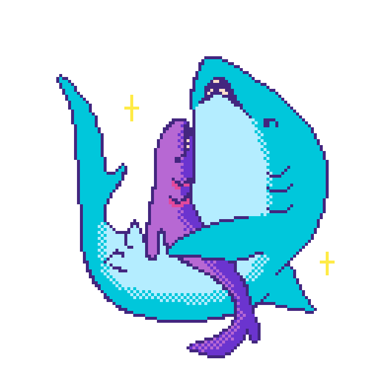
サメは意外と...
#骨は全身軟骨！
#イメージで決めつけてない？
#「推し」のサメを見つけちゃおう！
サメは意外と...
テキスト
テキスト
テキスト
PROBLEM
サメを取り巻く問題について
-
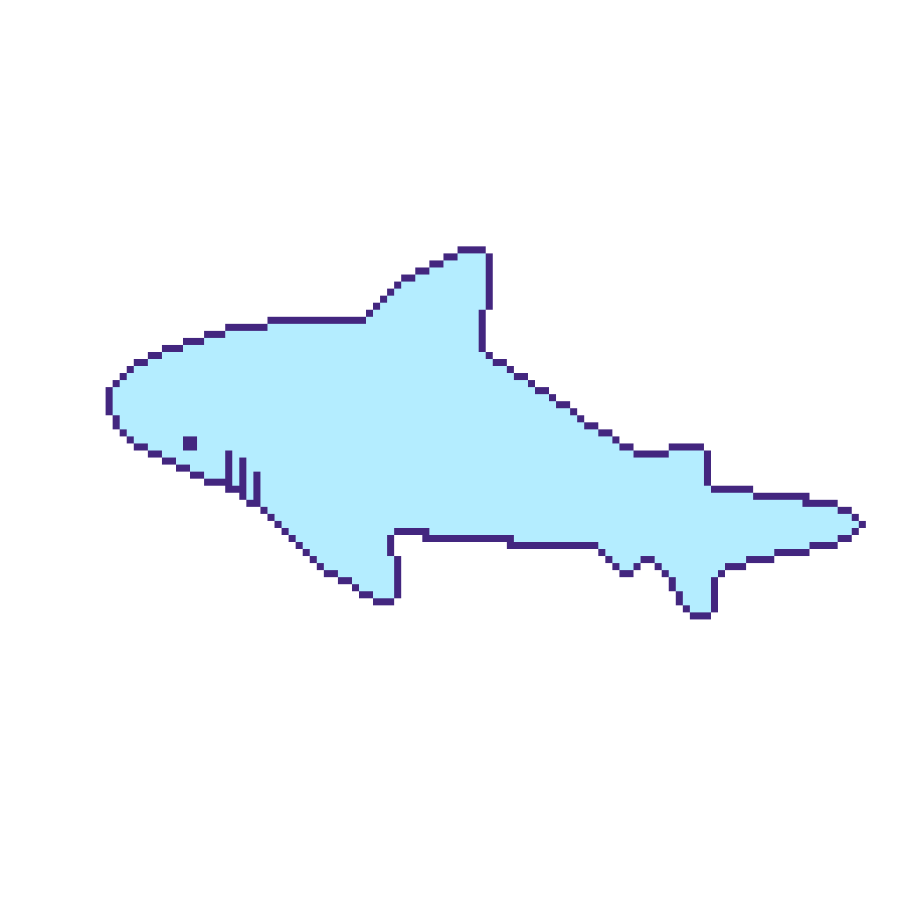
サメ消滅の危機？
#70%のサメが既に消えている？
#１年で数千万匹
#１時間に１万匹
サメ消滅の危機？
テキスト
テキスト
テキスト
-
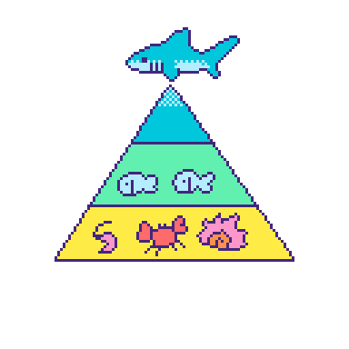
生態系での重要性
#「海の王者」であるサメ
#生態系ピラミッド
#海のバランスのキーパーソン
生態系での重要性
テキスト
テキスト
テキスト
-
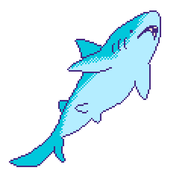
シャークフィニング
#フカヒレ漁とサメの乱獲
#ヒレがないサメが海にいる？
#多くの国では禁止だけど…
シャークフィニング
テキスト
テキスト
テキスト
-
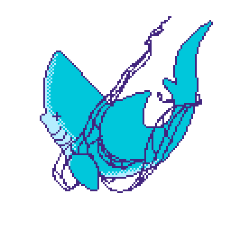
ゴーストギア
#海ゴミ問題とサメ
#漁具がサメたちに絡まる
#ゴミはゴミ箱に捨てよう
ゴーストギア
テキスト
テキスト
テキスト
-
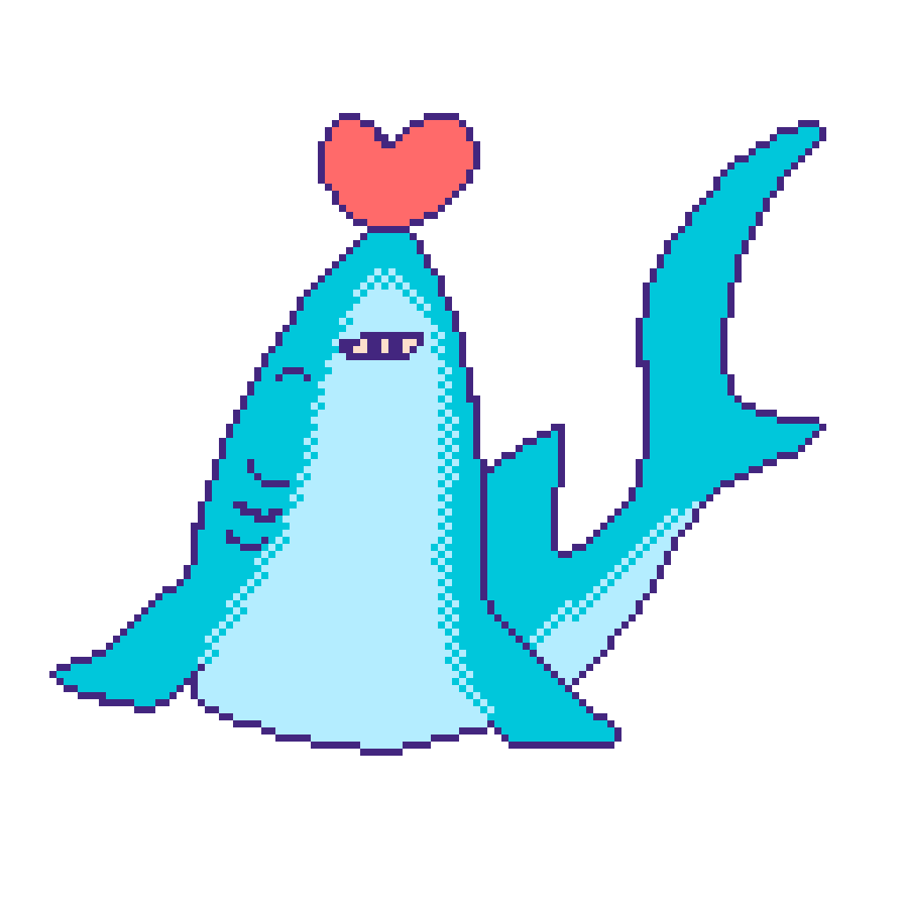
サメを守るために！
#フカヒレ漁とサメの乱獲
#ヒレがないサメが海にいる？
#多くの国では禁止だけど…
サメを守るために！
テキスト
テキスト
テキスト